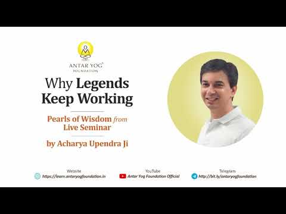

क्या आपने कभी सोचा है कि भगवान श्रीकृष्ण, जिन्हें तीनों लोकों में कुछ भी पाना शेष नहीं था, फिर भी निरंतर कर्म क्यों करते रहे? और राम व कृष्ण जैसे अवतार भी गुरुकुल क्यों गए?
भगवद्गीता के तीसरे अध्याय के कुछ श्लोकों पर यह प्रवचन एक सीधी बात कहता है: श्रेष्ठ पुरुष अपने लिए नहीं, संसार के लिए कर्म करते हैं।
संक्षेप में, यहाँ लोकसंग्रह का अर्थ है लोगों को जोड़ना और उन्हें दिशा देना। गीता (३.२१–३.२६) में श्रीकृष्ण बताते हैं कि श्रेष्ठ पुरुष जैसा आचरण करता है, लोग वैसा ही करते हैं। इसलिए जिसे कुछ पाना शेष नहीं, वह भी कर्म करता है, ताकि समाज को आदर्श मिले और लोगों में कर्मों के प्रति अश्रद्धा न हो।
समाज किसकी ओर देखता है?
यद्यदाचरति श्रेष्ठस्तत्तदेवेतरो जनः।
स यत्प्रमाणं कुरुते लोकस्तदनुवर्तते॥
"श्रेष्ठ पुरुष जो-जो आचरण करते हैं, अन्य लोग भी वैसा ही करते हैं। वह जो प्रमाण बना देता है, पूरा समाज उसी के अनुसार चलने लगता है।"
(श्रीमद्भगवद्गीता ३.२१)
इसीलिए नेतृत्व (leadership) एक उत्तरदायित्व है। नेता एक उत्तरदायी व्यक्ति होता है। अगर वह सावधान होकर नहीं चलता, तो बड़ी हानि हो जाती है।
जिसे कुछ पाना नहीं, वह भी चलता रहता है
न मे पार्थास्ति कर्तव्यं त्रिषु लोकेषु किञ्चन।
नानवाप्तमवाप्तव्यं वर्त एव च कर्मणि॥
"श्रीकृष्ण कहते हैं कि तीनों लोकों में उनका कोई कर्तव्य नहीं, कोई वस्तु अप्राप्त नहीं, फिर भी वे कर्म में लगे रहते हैं।"
(श्रीमद्भगवद्गीता ३.२२)
गुरुजी यह बात अपने जीवन से जोड़ते हैं। इस समय उनकी कोई आय नहीं है। चाहें तो ऑनलाइन बहुत कुछ हो सकता है, कार्यक्रमों के निमंत्रण भी बहुत आते हैं। फिर भी उन्हें घूमना पड़ता है, क्योंकि आश्रम चाहिए, यह चाहिए, वह चाहिए। वे कहते हैं कि उन्हें एक आदर्श दिखाना होता है, और यह दिखावे के लिए नहीं, यही उनके जीवन का ढंग है।
उन्हें पूजा की आवश्यकता नहीं। वे जानते हैं कि मूर्तिपूजन साधना की आरंभिक अवस्था है, फिर भी करते हैं। वरना लोग कहेंगे, "गुरुजी तो कुछ नहीं करते, हम क्यों करें?"
राम और कृष्ण गुरुकुल क्यों गए?
यदि ह्यहं न वर्तेयं जातु कर्मण्यतन्द्रितः।
मम वर्त्मानुवर्तन्ते मनुष्याः पार्थ सर्वशः॥
"यदि भगवान सावधान होकर कर्म न करें, तो बड़ी हानि हो, क्योंकि मनुष्य उन्हीं के मार्ग पर चलते हैं।"
(श्रीमद्भगवद्गीता ३.२३)
कृष्ण अवतार थे, फिर भी सांदीपनि ऋषि के पास गए। राम अवतार थे, फिर भी वशिष्ठ के पास गए। अगर वे गुरुकुल न जाते, तो आज के बच्चे कहते, "हमें जाने की क्या ज़रूरत?"
आपके बच्चे, आपके साथी, आपके छोटे भाई-बहन आपसे क्या सीख रहे हैं? आपका आचरण उनके लिए कैसा प्रमाण बन रहा है?
जब आदर्श टूटते हैं: वर्णसंकर
उत्सीदेयुरिमे लोका न कुर्यां कर्म चेदहम्।
सङ्करस्य च कर्ता स्यामुपहन्यामिमाः प्रजाः॥
"यदि श्रेष्ठ पुरुष कर्म न करें, तो लोग नष्ट-भ्रष्ट हो जाएँ और वर्णसंकर (वर्णों का पतन, degradation of the varnas) फैल जाए।"
(श्रीमद्भगवद्गीता ३.२४)
गुरुजी इसे आज के उदाहरणों से समझाते हैं:
- चिकित्सक का व्यवसाय सेवा का था। जब वह केवल पैसा कमाने लगता है, तो वह ब्राह्मण और वैश्य का मिश्रण बन जाता है।
- पैसा कमाने वाला शिक्षक भी ब्राह्मण और वैश्य का मिश्रण है।
- राजा में शूद्र वृत्ति आ जाए, तो क्षत्रिय और शूद्र के मिश्रण से भ्रष्ट राजनेता बनता है।
यह सब तब होता है जब श्रेष्ठ जन अपना आदर्श कर्म छोड़ देते हैं।
सासू माँ में दुर्गा दिखीं?
सक्ताः कर्मण्यविद्वांसो यथा कुर्वन्ति भारत।
कुर्याद्विद्वांस्तथासक्तश्चिकीर्षुर्लोकसङ्ग्रहम्॥
"कर्म में आसक्त अज्ञानीजन जैसे कर्म करते हैं, आसक्तिरहित ज्ञानी भी लोकसंग्रह (लोगों को जोड़ना और दिशा देना) के लिए वैसे ही कर्म करे।"
(श्रीमद्भगवद्गीता ३.२५)
अज्ञानी कैसे कर्म करता है? "सासू माँ को देखना है, पत्नी को देखना है, ऑफिस को देखना है।" कर्म-कर्म चलता रहता है, पर किसी में भगवान नहीं दिखते। "सासू माँ की सेवा मैं जबरदस्ती कर रही हूँ", और उनमें दुर्गा देवी दिखी ही नहीं।
काम से तो आप बच नहीं सकते। पर किसके लिए कर रहे हैं, और आप कौन हैं, यह पता नहीं।
और जो ज्ञानी हो गया, वह अहंकार करे, तो वह और भी नीचे गिरता है। ज्ञानी भक्त को तो ज्ञानयुक्त कर्म करना था।
"मत करो" नहीं, "ऐसे करो"
ऐसे लोगों से तुरंत यह मत कहो, "काम छोड़ दो, सब मोह-माया है, चलो हिमालय।" सद्गुरु उन्हीं की तरह कर्म करके दिखाता है, पर नए ढंग से।
- तुम दान देते हो, तो गुरु को भी दान करके दिखाना होगा: महादान।
- तुम व्यापार करते हो, तो गुरु को भी व्यापार करके दिखाना होगा, श्रीविद्या के ढंग से।
लोगों को ऐसा नेता पसंद नहीं जो केवल "मत करो" कहता है। "यहाँ गाड़ी मत खड़ी करो" कहने वाले को यह भी बताना होगा कि कहाँ खड़ी करें। यही अच्छा पालन-पोषण (good parenting) है: यह नहीं, उसके बदले यह।
विकल्प के बिना बदलाव नहीं
हम रोज़ कहते हैं, भ्रष्ट लोगों को निकाल दो। पर जब तक अगली पीढ़ी तैयार नहीं, संसद खाली नहीं रहेगी। जब तक ऐसे सात्विक लोग नहीं आते जो कागज़ी काम भी कर सकें, थोड़ी दबंगई भी कर सकें, जिनमें थोड़ा रजोगुण भी हो, तब तक उन्हें बदला नहीं जा सकता।
केवल यहाँ बैठकर प्रवचन देने वाला गुरु सद्गुरु नहीं है। इसीलिए गुरुजी को राजनीति में प्रवेश करना, बाहर जाकर अध्ययन करना पड़ता है। बड़े से बड़े राजा को भी गुरु से मिलना पड़ा। शिवाजी महाराज को भी प्रेरित करना पड़ा था। गुरु यह न करें, तो देश नहीं बदलता।
तो वही कर्म करो जो लोग करते हैं, पर अकेले नहीं। लोगों को जोड़ते हुए सिखाओ: ऐसे नहीं, ऐसे; और ऐसा करने से क्या होता है।
क्या आध्यात्मिक होने के लिए काम छोड़ना ज़रूरी है?
न बुद्धिभेदं जनयेदज्ञानां कर्मसङ्गिनाम्।
जोषयेत्सर्वकर्माणि विद्वान्युक्तः समाचरन्॥
"परमात्मा में स्थित ज्ञानी, कर्म में लगे लोगों की बुद्धि में भ्रम, अर्थात कर्मों में अश्रद्धा, उत्पन्न न करे। वह स्वयं शास्त्रविहित कर्म भली-भाँति करते हुए उनसे भी करवाए।"
(श्रीमद्भगवद्गीता ३.२६)
"बेटा, व्यापार छोड़ दे, सब मोह-माया है", ऐसा कहने वाले गुरु के पास मत जाना। "बेटा, यह श्रीविद्या है, इससे तू और धनवान हो सकता है", यह सही शिक्षा है।
त्याग का अर्थ है देश की सेवा, और आसक्त न होना। केवल छोड़ देना सही मार्ग नहीं। पहले शक्ति तो विकसित करो।
क्या आप कुछ छोड़ना चाहते हैं क्योंकि वह कठिन है, या इसलिए कि आप सचमुच उससे ऊपर उठ चुके हैं?
विवाह समस्या नहीं है
"शादी मत करो, बहुत कष्ट है", यह मत सिखाना। श्रीराम, एकनाथ महाराज, तुकाराम महाराज, शिवजी, यहाँ तक कि बुद्ध, सबका विवाह हुआ।
समस्या विवाह नहीं है, समस्या यह है कि आप विवाह को कैसे निभाते हैं। सच्चा गुरु स्वयं शायद ब्रह्मचारी हो, पर आपको विवाह से नहीं रोकेगा। साईं बाबा का विवाह नहीं हुआ, पर क्या उन्होंने किसी ज़मींदार, राजा या रानी से कहा कि विवाह करके गलत किया?
"यह मत करो बेटा" कहने वाला किसी एक पंथ का गुरु हो सकता है, पर सद्गुरु नहीं, अवतार तो बिल्कुल नहीं। अगर किसी परंपरा की अगली पीढ़ी ऐसी शिक्षा दे रही है, तो बीच में कुछ गड़बड़ हुई है।
शिक्षक व्यावहारिक हो
सच्चा शिक्षक ट्यूशन कक्षा जैसा नहीं होता कि "यह रट लो, परीक्षा में यही आएगा।" वह स्वयं करके दिखाता है और आपसे भी करवाता है।
मुख्य बातें
- श्रेष्ठ पुरुष का आचरण ही समाज का प्रमाण बनता है, इसलिए नेतृत्व एक उत्तरदायित्व है।
- जिसे कुछ पाना नहीं, वह भी आदर्श दिखाने के लिए कर्म करता है; राम और कृष्ण भी इसीलिए गुरुकुल गए।
- आदर्श टूटने पर वर्णसंकर फैलता है: पैसे के पीछे भागता चिकित्सक या शिक्षक, भ्रष्ट राजनेता।
- अज्ञानी कर्म करता है पर उसमें भगवान नहीं देखता; ज्ञानी को ज्ञानयुक्त कर्म करना है।
- सद्गुरु "मत करो" नहीं कहता; वह विकल्प देता है और करके दिखाता है।
- त्याग का अर्थ आसक्ति छोड़ना है, कर्म छोड़ना नहीं; विवाह और व्यापार समस्या नहीं, उन्हें निभाने का ढंग समस्या है।

आगे पढ़ें

हम सब मानकर चलते हैं कि जो कुछ हम करते हैं, वह हमारा अपना निर्णय है। पर क्या सच में ऐसा है?

हम सब कुछ न कुछ करते रहते हैं: नौकरी, व्यापार, विवाह, घर-गृहस्थी। पर क्या आपने कभी सोचा है कि आप यह सब क्यों करते हैं?

हम में से ज़्यादातर लोग बचपन से पूजा करते आए हैं। हाथ जोड़ना, नमस्कार करना, आरती गाना, यह सब हमें विरासत में मिला।